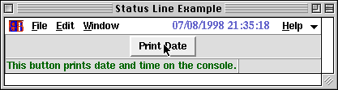

<!DOCTYPE HTML PUBLIC "-//W3C//DTD HTML 4.01 Transitional//EN">
<HTML lang="ja-JP">
<HEAD>
<META HTTP-EQUIV="Content-Type" CONTENT="text/html; charset=ISO-2022-JP">
<TITLE>KBFrame Status Line</TITLE>
</HEAD>

<BODY BGCOLOR="White" TEXT="Black" LINK="Blue" VLINK="Teal" ALINK="Red">

<A NAME="top" HREF="index-ja.html">$BL\<!(B</A>
<A HREF=progbar-ja.html>Progress Bar</A>
<A HREF=cmparr-ja.html>$BItIJ$NG[CV(B</A>

<HR><DIV ALIGN="CENTER"><H2>Status Line</H2></DIV><HR>

<P>KBFrame$B2<$N%9%F!<%?%9%i%$%s$K%a%C%;!<%8$rI=<($9$k$K$O(B2$B$D$NJ}K!$,$"$j$^$9!#(B
$B$^$:!"%^%&%9%]%$%s%?$,$"$k(BWidget$B$N>e$rDL$C$?;~$K%a%C%;!<%8$rI=<($9$k$K$O!"(B
w[StatusLine] = $B$N1&JU$K(BWidget$B$N%7%s%\%k$H%a%C%;!<%8$rMWAG$H$9$k%j%9%H$r(B
$BM?$($^$9!#$3$l$O4J0W%X%k%W$K$b;HMQ$G$-$^$9!#(B</P>

<PRE><CODE>
FFS;
w = KBMainFrame["StatLineExample1", f, Title-&gt;"Status Line Example 1"];
b = Button[f, Text-&gt;"Print Date", Command:&gt;Print[DateString[]]];
w[StatusLine] = {b, "This button prints date and time on the console."};
TkWait[];
</CODE></PRE>

<P>$B>e$NNc$G$O!"(Bb$B$KBP$7$F;XDj$7$?J8;zNs$,D92a$.$?$N$G!"%^%&%9%]%$%s%?$,(Bb$B$N>e$r(B
$BDL$k;~$O(BWindow$B$,2#$K9-$,$C$F$7$^$$$^$9!#(B</P>

<P></P>

<P>$B$b$&0l$O!"%9%F!<%?%9%i%$%s$K8GDj$N%a%C%;!<%8$rI=<($9$kJ}K!$G!"(B
w[StatusLine] = $B$N1&JU$KJ8;zNs$rM?$($^$9!#(Bw[FreeStatusLine]$B$OI=<($5$l$?(B
$B%a%C%;!<%8$N8GDj$r2r=|$7$^$9!#(B</P>

<PRE><CODE>
FFS;
w = KBMainFrame["StatLineExample2", f, Title-&gt;"Status Line Example 2"];
b1 = Button[f, Text-&gt;"Fix Status Line", Command:&gt;(w[StatusLine]="Status line fixed.")];
b2 = Button[f, Text-&gt;"Free Status Line",
               Command:&gt;(w[StatusLine]="Status line freed.";w[FreeStatusLine])];
TkWait[];
</CODE></PRE>

<P><A HREF="#top">top</A></P>

<HR>
<ADDRESS>$B$3$N%Z!<%8$K4X$9$k8f0U8+!&<ALd$O(B
<A HREF="mailto:samo.stanic@kek.jp">Samo Stanic</A>
$B$^$G(B.</ADDRESS>
</BODY>
</HTML>
